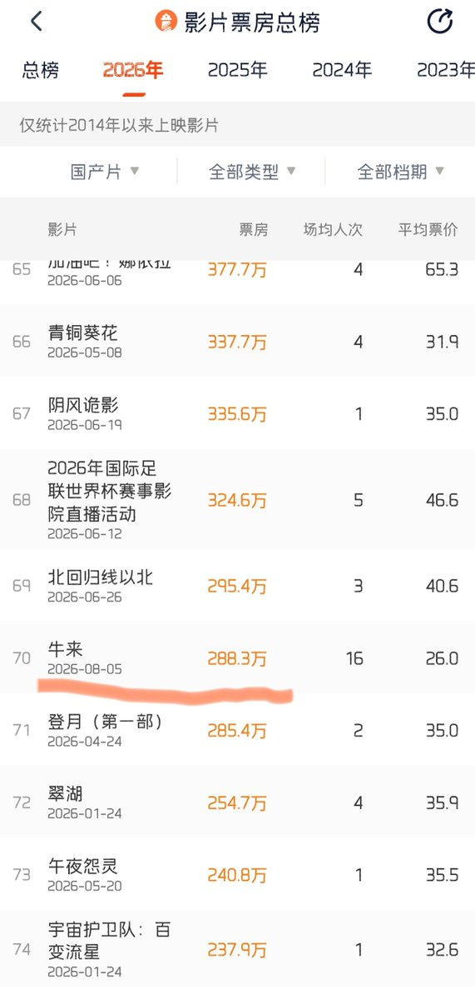

奶昔🥤
@realNyarime
没想到暑期档最大的黑马是《牛来》，几千块的成本，现在实时票房已经来到288万，估计后面会破千万吧
按投资回报率来说，甚至可以说是中国影史最大的黑马了，之前很多主播预测暑期档票房黑马的全军覆没了
现在只有枪版露出，还是看看翠猫姐姐的翻版吧，原版我去电影院看了感觉不如这版好看(✧∀✧)

CuiMao
@CuiMao
大家好，紧急更新CuIMao版的《牛来》，由Seedance2.5制作。 https://t.co/bH9mTnO0wg